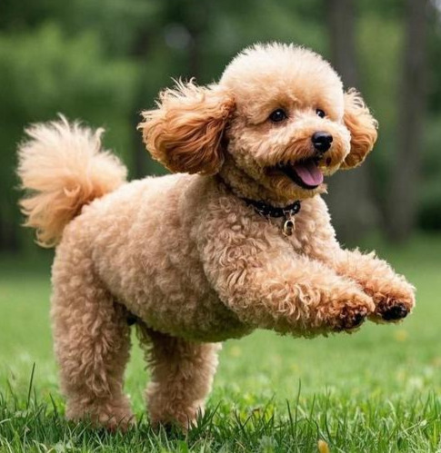
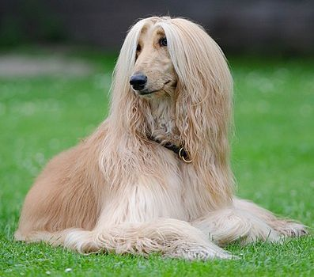
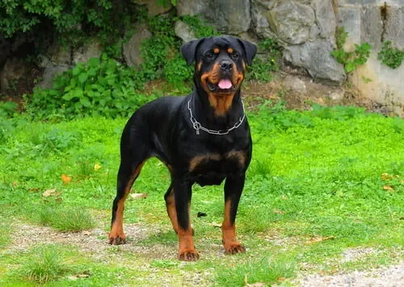
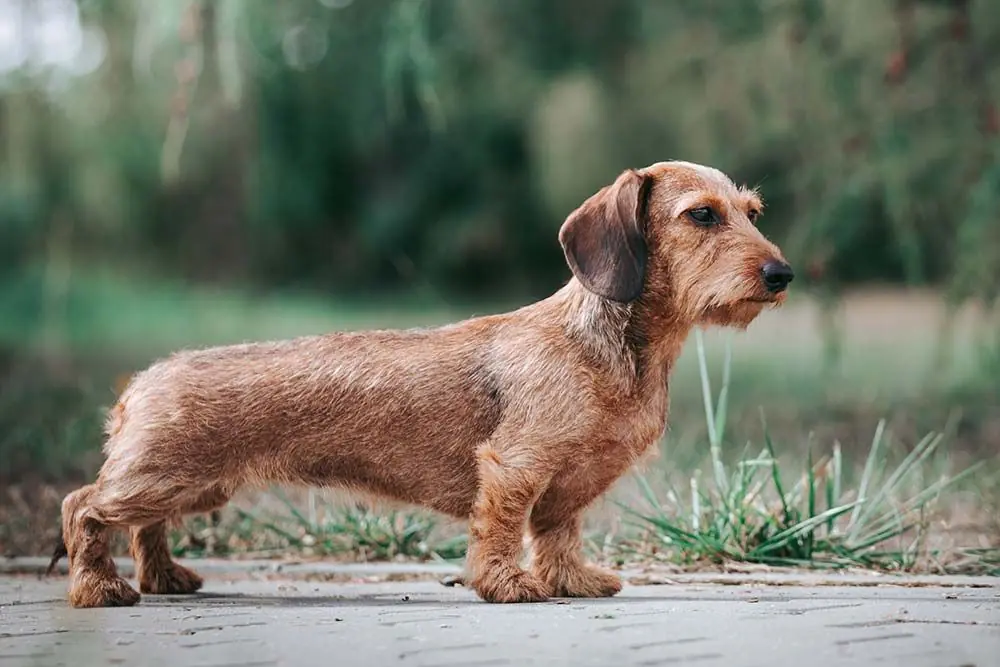

Servicios
Listado de Servicios
| Tipo | Servicios | Duración | Más Info |
|---|---|---|---|
 |
Pelo rizadoServicio completo: Baño, vaciado de glándula, secado, corte combi completo, corte de uñas |
90 a 180 minutos approx | Más info |
 |
Pelo largoServicio completo: Baño, vaciado de glándula, secado, cepillado, corte combi zonas necesarias, corte de uñas |
120 a 240 minutos approx | Más info |
 |
Pelo cortoServicio completo: Baño, vaciado de glándula, secado, corte de uñas |
60 a 120 minutos approx | Más info |
 |
Pelo duroServicio completo: Baño, vaciado de glándula, secado, stripping, corte de otras zonas, corte de uñas |
90 a 180 minutos approx | Más info |